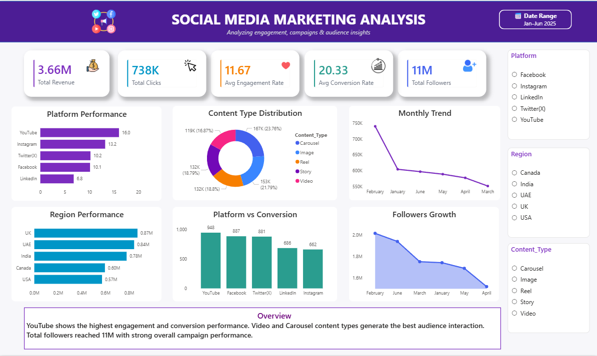

Total Revenue
3.66M
Campaign revenue generated
An interactive Power BI dashboard analyzing social media campaign performance across platforms, regions, and content types, with a focus on revenue, clicks, engagement, conversions, and follower growth.
What this dashboard analyzes and how it supports decisions.
This project transforms marketing data into actionable insights through interactive KPIs and visualizations. It helps evaluate campaign effectiveness, compare social media platforms, understand content performance, and analyze regional and monthly trends.
Tools and concepts used in the project:

The dashboard provides a consolidated overview of marketing campaign performance through revenue, clicks, engagement, conversion, and follower metrics. It compares platforms, content types, and regions while tracking monthly trends and follower growth.
Findings reported from the analysis.
YouTube showed the highest engagement and conversion performance among the analyzed platforms.
Carousel and Image content types generated strong audience interaction.
Total campaign revenue reached approximately 3.66M.
The campaigns generated approximately 738K clicks.
Total followers reached approximately 11M.
Regional analysis helps identify areas with stronger campaign and revenue performance.
Platform-wise conversion analysis helps evaluate the effectiveness of different social media channels.
Monthly trend analysis and interactive filters help users compare campaigns, regions, and content types to support marketing decisions.
The Social Media Marketing Analysis Dashboard provides an overview of campaign revenue, audience interaction, conversion performance, and follower growth. YouTube showed strong engagement and conversion results, while Video and Carousel content generated strong audience interaction. Regional and monthly comparisons provide further visibility into campaign performance. Overall, the project demonstrates how Power BI can turn marketing data into actionable insights for informed decision-making.
Archana — Data Analyst | Excel | SQL | Python | Power BI
Passionate about building interactive dashboards and transforming data into actionable insights.